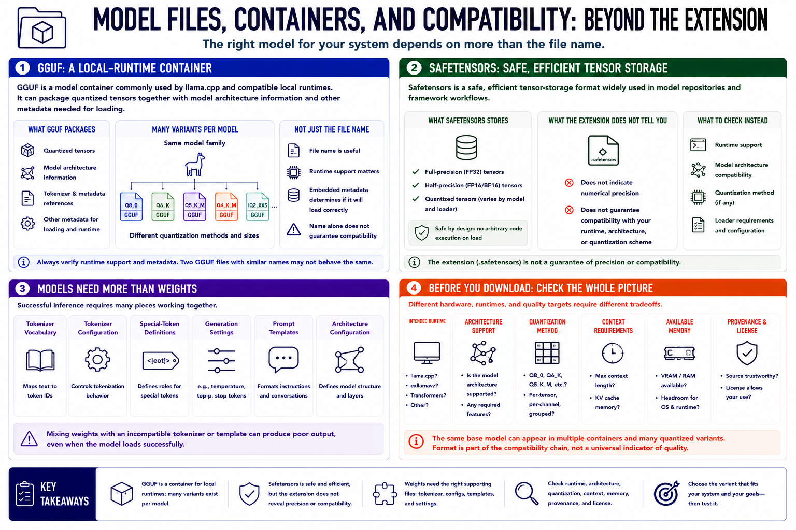

Common Local Model Formats
Connecting to LMS... Progress: in progress

Narration
GGUF is a model container commonly used by llama.cpp and compatible local runtimes. It can package quantized tensors together with model architecture information and other metadata needed for loading. A single model family may be published as many GGUF files, each using a different quantization method or size. The file name is useful, but runtime support and embedded metadata determine whether it can be loaded correctly.
Safetensors is a safe, efficient tensor-storage format widely used in model repositories and framework workflows. Safetensors files may contain full-precision, half-precision, or quantized tensors depending on the model and loader. The extension alone does not tell you the numerical precision, and it does not guarantee that a local runtime supports the model architecture or quantization scheme.
Models often require more than weight files. Tokenizer vocabulary, tokenizer configuration, special-token definitions, generation settings, prompt templates, and architecture configuration influence how text becomes tokens and how conversations are formatted. Mixing weights with an incompatible tokenizer or template can produce poor output even when the model loads successfully.
Before downloading a variant, identify the intended runtime, architecture support, quantization method, context requirements, and available memory. Confirm provenance and license terms. The same base model can appear in multiple containers and many quantized variants because different hardware, runtimes, and quality targets need different tradeoffs. Format is part of the compatibility chain, not a universal indicator of quality.